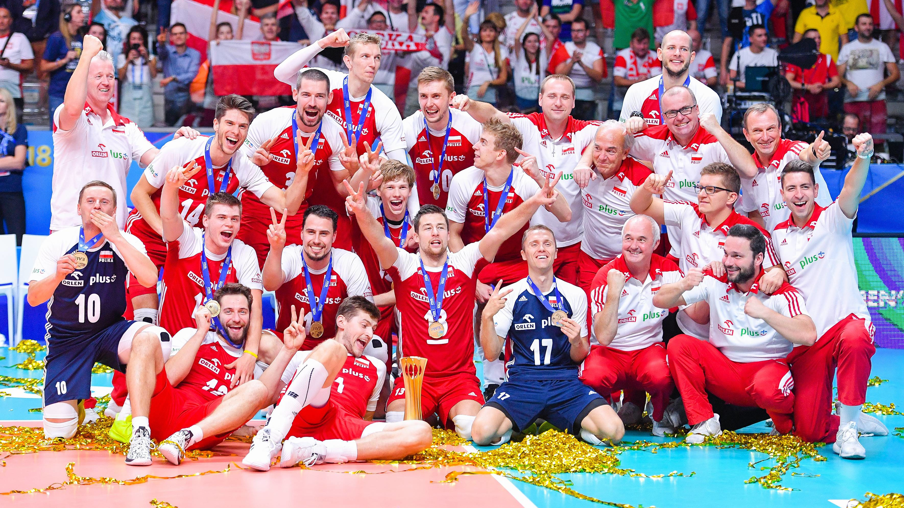

Historia siatkówki w Polsce
Do Polski siatkówka trafiła za pośrednictwem YMCA, a pierwszy mecz pokazowy miał miejsce w Warszawie w 1919. Rok później w Łodzi rozegrano turniej drużyn szkolnych. W 1929 w Warszawie rozegrano pierwsze mistrzostwa Polski – w rywalizacji kobiet zwyciężył AZS Warszawa, a wśród mężczyzn YMCA Łódź.
W okresie międzywojennym siatkówka była zrzeszona, razem z paroma innymi dyscyplinami, w Polskim Związku Palanta i Gier Ruchowych (od 1925), w Polskim Związku Gier Ruchowych (od 1926), w Polskim Związku Gier Sportowych (od 1928 – co uznaje się za datę oficjalnych narodzin siatkarskiego związku) i w Polskim Związku Piłki Ręcznej (od 1936).
Polski Związek Piłki Siatkowej (PZPS) jako samodzielny związek sportowy został powołany do życia 30 czerwca 1957, podczas Krajowej Konferencji Sprawozdawczo-Wyborczej Piłki Siatkowej. Głównymi partnerami, a zarazem sponsorami PZPS, są Polkomtel i PKN Orlen, którzy wspierają także Reprezentacje Polski w piłce siatkowej kobiet i mężczyzn.
Reprezentacja polskich siatkarek pierwszy mecz rozegrała w Warszawie 14 lutego 1948, pokonując Czechosłowację 3:1.  Reprezentacja siatkarzy zadebiutowała na arenie międzynarodowej także z Czechosłowacją w Warszawie 28 lutego 1948, przegrywając 2:3.
Reprezentacja polskich siatkarzy w swojej historii zdobyła złoty medal na Igrzyskach Olimpijskich w Montrealu 1976, a także trzykrotnie tytuł Mistrzów Świata: w roku 1974 w Meksyku, w 2014 w Polsce, pokonując w meczu finałowym zespół Brazylii 3:1, przerywając tym samym trwającą nieprzerwanie 12 lat hegemonię tej drużyny, oraz w 2018 we Włoszech i Bułgarii, pokonując w meczu finałowym zespół Brazylii 3:0, osiągając tym samym trwającą nieprzerwanie 4 lata hegemonię.